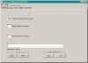
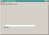
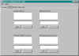
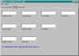
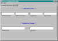

Tymeac Configuration Data
The Configuration Data is necessary so that the Tymeac Server may find the Data Base
Management System for your installation and for several general variables, described
below.
There are two places you may place this data:
- The system preference node com/tymeac/base
- A configuration file.
Preferences:
For a description of how preferences work, see the API documentation for java.util.prefs.
Tymeac uses the system node name com/tymeac/base. The key-values are
in com.tymeac.base.TyBase. You must
use the TyCfg panels to set these key-values by filling in the data on each panel and
using the Put Button, below.
In the absence of start up options (for stand-alone
or directory/file), Tymeac start up looks first for the preference data. When start up
does not find preference data, it then looks for the configuration file in the current
directory.
Configuration File:
The old cfg file was replaced by an xml file in release
5.2
If you need to convert the old format to xml, use the supplied conversion
Class, ConvertCfg.class. This class (the source as well) are in the default
directory. Use the script, CfgToXml in the Scripts
directory.
This Class produces a simple xml based file. You should not edit this
file manually.
You must use the TyCfg panels to set these Element/attribute values by filling in the data on each panel and
using the Finish Button, below.
Click to see a full image on any of these thumbnails.

 


GENERAL
SECURITY
EXITS
DBMS
ALTERNATES
Preface:
Tymeac has alternatives for the statistics and logging repositories. Please read this document.
Tymeac inserts all Strings directly into commands at run time without prefix or suffix.
General Section:
Elements:
Sys.exit(): This Checkbox is
Not Checked for no shut down
thread,
Is Checked for yes. Yes is the
default
The RMI server is keep alive by a thread that never ends.Tymeac Server also issues a
never ending wait() so that the garbage collector does not eat necessary variables
In order to end Tymeac Server after a normal shut down, Tymeac starts a thread at shut
down. This thread calls System.exit(0) which ends the Java Virtual Machine. Not
Checked for this option does not start this thread. The name of this thread
is found here. The file line is either the String
"yes" or "no".
Monitor Interval: The interval, in
seconds, that the Tymeac Monitor sleeps. Another way of saying this is the delay
between running of the Monitor. When zero, Tymeac does not start the
Monitor. Tymeac also uses this interval for timing
of how long requests are in the system. When over this (interval (times a factor)) a
request may be marked as possibly stalled. A good place to
start is 60 seconds.
Inactivation Minutes: This is the time, in
minutes, to inactivate the Tymeac Server when no activity (see
below) takes place for this interval. This is only valid for the Remote Object
Activation System and when specifying a Monitor Interval, above.
It is the Monitor that checks for time of activity. Therefore, there is a close
correlation between the Monitor interval and the Inactivation Minutes. If one specifies an
Inactivation time of one (1) minute and a Monitor interval of ten minutes (600 seconds),
then the Inactivation time in effect becomes ten minutes.
The three above are alterable at runtime with the
Alter Server Options GUI
Notification Function: This is the
Tymeac Function the Monitor executes when it finds a potential problem. The Monitor
sends a message to this Function. This is a customer responsibility. Tymeac supplies
a sample for your perusal.
Buttons
Configuration File
Import: This button brings up the standard FileDialog
Menu. The default FileName is tymeac.xml. When no file already exists, bypass
this button.This is to import an existing file.
Finish: This button brings up the standard FileDialog
Menu. The default FileName is tymeac.xml. See the section on Start Up for Tymeac Server before changing this name. This is
to update the file, or add a new file.
Preferences:
Get: This button fetches the preferences data from system node
com/tymeac/base.
Put: This button saves the preferences data to system node
com/tymeac/base.
SECURITY Section:
Elements:
Login Context: This is the String field for
a login context or null.
EXITS Section:
Elements:
Startup Classes List: These are the
classes Tymeac instantiates at startup.See the sections on user
exits and class naming and URL's.
Startup Classes TextField: This is the TextField for adding a
String to the above start up list.
Startup Functions List: These are the
Functions Tymeac starts at startup. See the section on start up functions.
Startup Functions TextField: This is the TextField for adding a
String to the above start up Functions list.
Stage 1 shut down Classes List:
These are the classes Tymeac instantiates at stage 1 of shut down. See the
sections on user exits and class
naming and URL's.
Stage 1 shutdown TextField: This is the TextField for adding a
String to the above stage 1 shut down list.
Stage 2 shut down Classes List:
These are the classes Tymeac instantiates at stage 2 of shut down. See the
sections on user exits and class
naming and URL's.
Stage 2 shutdown TextField: This is the TextField for adding a
String to the above stage 2 shut down list.
Buttons
ADD: This button adds the TextField to the associated List.
REMOVE: This button removes the selected String from the
associated List
DBMS Section:
Elements:
Tymeac inserts all Strings directly into commands at run time without prefix or suffix
Data Base URL: This is the URL used by Tymeac in the
JDBC method:
DriverManager.getConnection().
(See Name/PassWord, below.)
Drive Manager: This is the name of any drive manager for
your installation used by Tymeac in the JDBC method:
DriverManager.registerDriver((Driver)Class.forName( This String ).newInstance());
User Name / Pass Word: These two elements go together.
These are the elements used by Tymeac in the JDBC method:
DriverManager.getConnection().
When this two elements are present, Tymeac uses them when getting the connection,
Constructor (URL, Name, PassWord). However, when not present, Tymeac uses the single
Constructor (URL).
(See URL, above.)
Queue Table: This is the name of the Table of Queues used
by your installation. The format of the DBMS Table is described in DBMS
Queue Table.
Function Table: This is the name of the Table of Functions
used by your installation. The format of the DBMS Table is described in DBMS Function Table.
List Table: This is the name of the Table of Queues within
each Function used by your installation. The format of the DBMS Table is described in DBMS List Table.
Statistics Table: This is the name of the Table of
Statistics used by your installation. The format of the DBMS Table is described in DBMS Statistics Table.
Log Table: This is the name of the Log Table used by your
installation. The format of the DBMS Table is described in DBMS
Log Table.
ALTERNATES Section:
Elements:
Files
Statistics Directory: This is the TextField for using a file
directory. When using a file to store the statistics, this is optional.
Statistics File: This is the TextField for using a file name.
When using a file to store the statistics, this is required.
Log Directory: This is the TextField for using a file directory.
When using a file to store the log, this is optional.
Log File: This is the TextField for using a file name. When
using a file to store the log, this is required.
Classes
Statistics Classes: This is the TextField for using an
alternative class for the statistics repository. See the section on class naming and URL's.
Log Classes: This is the TextField for using an alternative
class for the log repository. See the section on class
naming and URL's.
Activity:
An inactive Tymeac Server has no currently executing synchronous or asynchronous
requests.
- Requests in the Stall Array are active asynchronous requests.
- Timed-out synchronous requests are active until the Monitor frees the request.
- Recursive requests, whether synchronous or asynchronous, are active.
- Notification requests from the Monitor are active.
The inactivation time is irrelevant to the Server's Distributed Garbage Collector's
Lease Value (java.rmi.dgc.leaseValue). Tymeac does not use the unreferenced notification
of the java.rmi.server.Unreferenced interface.
When there are no executing requests and there has been no request activity for this
time interval, the Monitor executes the shut down user exits,
if present, and calls: java.rmi.activation.Activatable.inactive().
|
{kind=link}
{kind=link}
{kind=link}
{kind=link}
{kind=link}